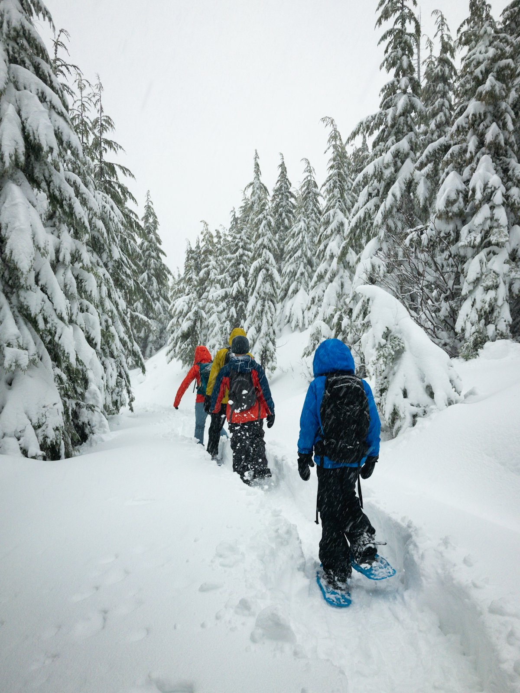
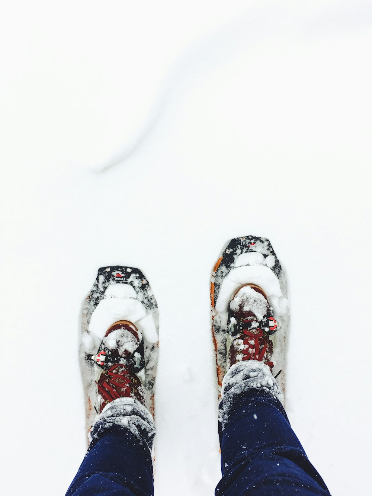
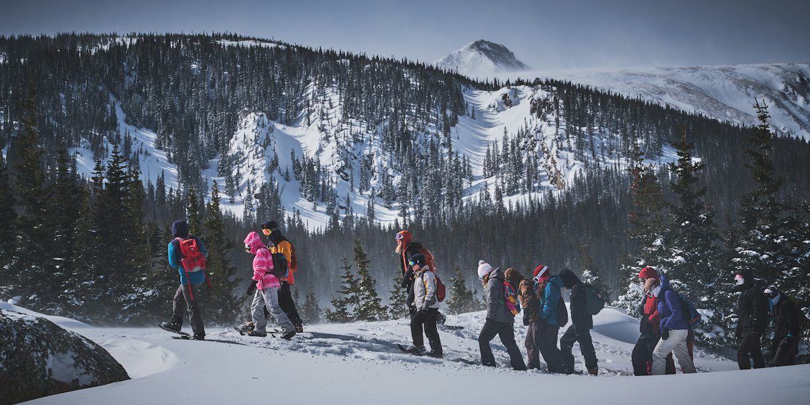
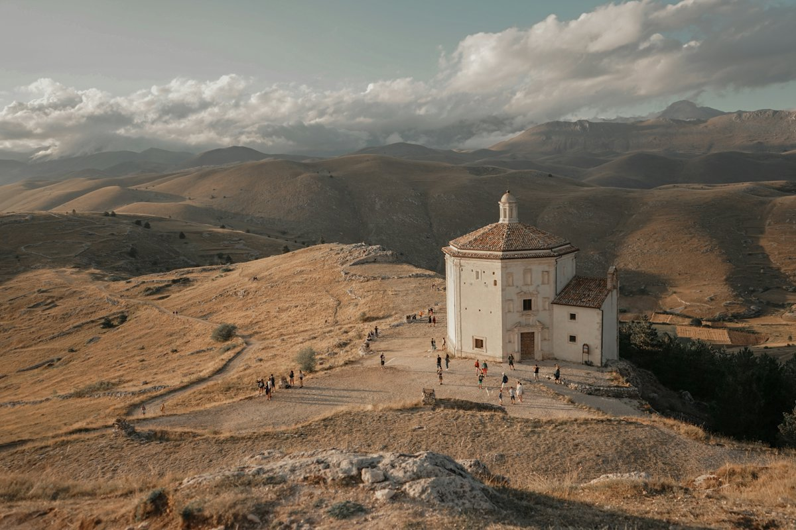

Il calendario come una carta escursionistica: ogni uscita è un punto sulla mappa. Toccalo e vedi dove, quanto si cammina e cosa mettere nello zaino.




Chi cammina con voi gira col telefono cinque inquadrature semplici; il montaggio, la musica e il testo arrivano pronti la sera stessa, con le date della prossima uscita. Il reel qui accanto si ripete: guardate come scorre.
Team building ed escursioni private: scegliete le persone, il percorso lo pensa Diletta. Una pagina per le aziende, con le proposte per stagione e un modulo che chiede quanti siete, quando e che passo avete.
«Si parte sconosciuti e si torna amici.»Diletta, guida escursionistica di Etta Walk Up